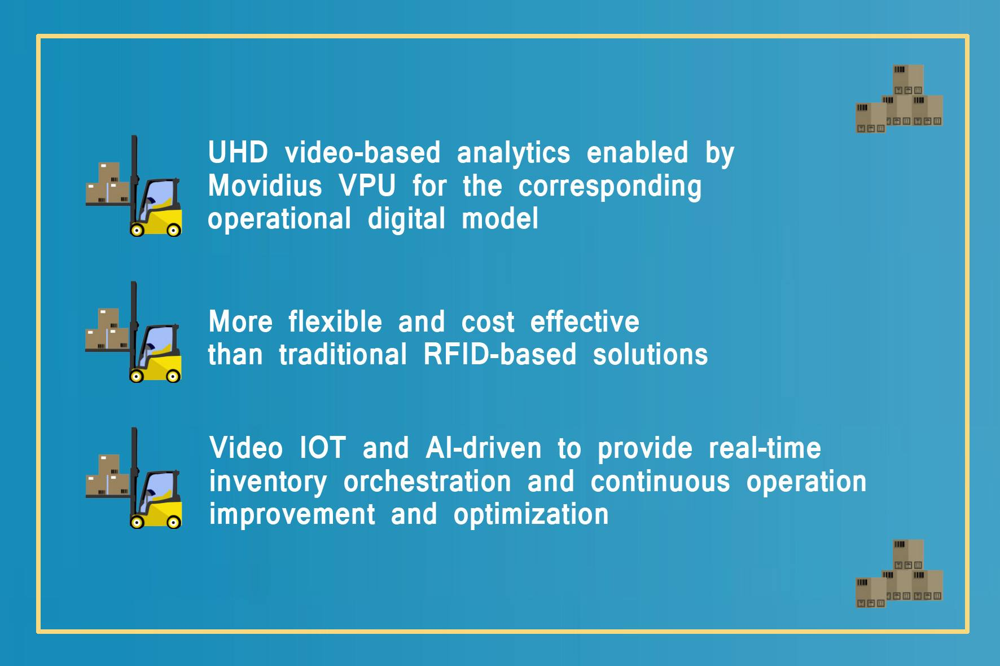
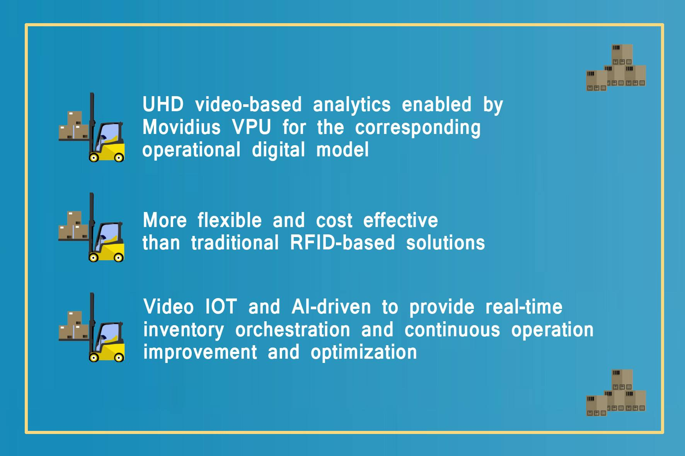

得益于能充分利用Intel Movidius VPU硬件增强的超高清视频分析能力，提供基于数字模型的智能化运维和操作平台；比传统RFID为基础的解决方案更高效、更具扩展性和更低的成本；基于视频优化技术的IoT平台和人工智能技术，提供能进行实时操作和展现的仓储资产管理解决方案，并持续改进和优化流程；


您是到访的第 位用户
得益于能充分利用Intel Movidius VPU硬件增强的超高清视频分析能力，提供基于数字模型的智能化运维和操作平台；比传统RFID为基础的解决方案更高效、更具扩展性和更低的成本；基于视频优化技术的IoT平台和人工智能技术，提供能进行实时操作和展现的仓储资产管理解决方案，并持续改进和优化流程；
